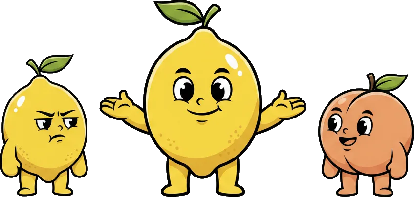

A wall of unverified complaints is worthless — and a tool for grudges. Four mechanics keep the Lemon Score credible: skin in the game, a contest window, corroboration weighting, and a deterrent that points both ways.
Employers pay — in tokens — to file a record. That single fact filters out most of the noise. Nobody spends money to vent.
It also monetises the exact frustration the platform exists to solve: the cost of a bad hire becomes the price of warning the next employer.
Free reviews are cheap talk. A token on the line means the employer has weighed it, evidenced it, and meant it.
Every upload pings the worker before it counts. They can accept it, or contest it with their own evidence. A contested record sits on hold — it earns no points until it's resolved.
That's the difference between a reliability platform and a rumour mill.
Borrow the one good idea from nuclear strategy: if both parties can hurt each other, both parties stay reconciliatory. Lemon Man is bidirectional on purpose.

Wage disputes, illegal deployment, retaliatory dismissal — workers log records against employers, on the same evidence standard.
When either side can damage the other's record, neither rushes to. The mere capability rebalances the moral hazard.
A mediation channel lets both parties resolve and walk back negative records — the reconciliatory exit the doctrine predicts.
Yes — at the sour end, a high enough Lemon Score functions as a blacklist. That is the point. A corroborated, contested, evidenced, expiring blacklist is exactly the deterrent the temp-labour market has never had.
Uploads map to fixed incident types with attached evidence — rosters, comms, MC, disciplinary letters, police references.
The quadratic jump only fires when separate, unrelated employers log the same trait. A single agency spamming records gets no leverage.
Records expire. A score is a picture of the recent past, not a permanent verdict — which keeps the data honest and current.
A lemon should fear the platform. A peach should never have to. Get that balance right, and the whole market ripens.
Pilot operators get the full walkthrough — engine, contest flow, the bidirectional design.